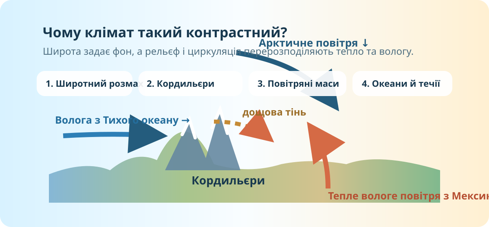

Як один материк може мати і арктичні пустелі, і вологі субтропіки?
1Зафіксуйте гіпотезу
Який набір чинників найкраще пояснить контрасти клімату Північної Америки?

Спочатку — географія, потім — клімат
Широта
Чому північ Канади й південь Мексики не можуть мати однаковий температурний режим?
Відкритий центр
На карті знайдіть, що між Арктикою та Мексиканською затокою немає суцільної широтної гірської стіни. Який наслідок це має для руху повітря?
Західна стіна
Кордильєри простягаються переважно з півночі на південь. Передбачте різницю опадів на навітряних і підвітряних схилах.
Зіткнення холоду й тепла: материк як коридор

2Сценарій А: вторгнення з Арктики
Уявіть зимове арктичне повітря, яке рухається на південь через Канаду й Великі рівнини. Який регіон відчує різке похолодання швидше?
3Сценарій Б: волога з півдня
Тепле вологе повітря з Мексиканської затоки просувається на північ. Що станеться, якщо воно зустріне холодне континентальне повітря?
Не пишіть просто «буде погана погода». Назвіть механізм.
Чому захід може бути і дуже вологим, і дуже сухим?

4Побудуйте причинний ланцюг
Розташуйте етапи подумки: вологе океанічне повітря → підйом на схил → охолодження → конденсація й опади → спуск за хребтом → прогрівання → сухіший клімат.
Перевірте модель реальними даними
NOAA Climate Atlas ↗
Порівняйте карти середньої температури та сум опадів. Знайдіть контраст між північчю і півднем та між узбережжями й внутрішніми районами.
NASA Worldview ↗
Увімкніть супутникові шари й простежте хмарні системи над материком.
Copernicus Browser ↗
Порівняйте зелене тихоокеанське узбережжя з посушливими міжгірними районами.
5Тест моделі на трьох точках
Оберіть три різні регіони: Аляска / північ Канади, Великі рівнини, узбережжя Мексиканської затоки. Для кожного назвіть головний кліматотвірний чинник і один спостережуваний наслідок.
Перевірте, чи збігається Ваш механізм із поясненням
Після перегляду: запишіть один чинник, який Ви недооцінили на старті, і один доказ, який підтвердив Вашу початкову гіпотезу.
Тепер звіряємо висновок із системою знань
Широтний чинник
Материк простягається від арктичних до субекваторіальних широт. Тому кількість сонячної енергії різко змінюється з півночі на південь, формуючи широтну зміну кліматичних поясів.
Циркуляція
Відкриті центральні рівнини полегшують меридіональний обмін: холодне арктичне повітря може проникати далеко на південь, а тепле й вологе повітря з Мексиканської затоки — далеко на північ.
Рельєф
Кордильєри перехоплюють значну частину вологи з Тихого океану. На навітряних схилах опадів більше, а за гірськими бар’єрами виникають сухі області й дощова тінь.
Океани й течії
Океани пом’якшують температурний режим узбереж. Теплі й холодні течії змінюють температуру та вологість повітря над прилеглими акваторіями, але їхній вплив завжди взаємодіє з циркуляцією та рельєфом.
Головне: клімат Північної Америки не пояснюється одним чинником. Просторовий малюнок виникає з їхньої взаємодії.
Доведіть твердження
Твердження: «Контрастність клімату Північної Америки визначає не лише широта; рельєф і меридіональний обмін повітря різко посилюють відмінності».
C — Claim
E — Evidence
R — Reasoning
Міні-експертиза одного кліматичного контрасту
Опрацюйте §45 «У чому проявляються особливості клімату Північної Америки» та оберіть одну пару територій: Ванкувер — внутрішня Канада; Аляска — Флорида; Каліфорнійське узбережжя — внутрішні плато. За картою атласу + одним реальним джерелом даних поясніть різницю температур або опадів у 5–7 реченнях.
10 завдань = 10 балів
Тест відкриється лише після введення прізвища, імені та класу.